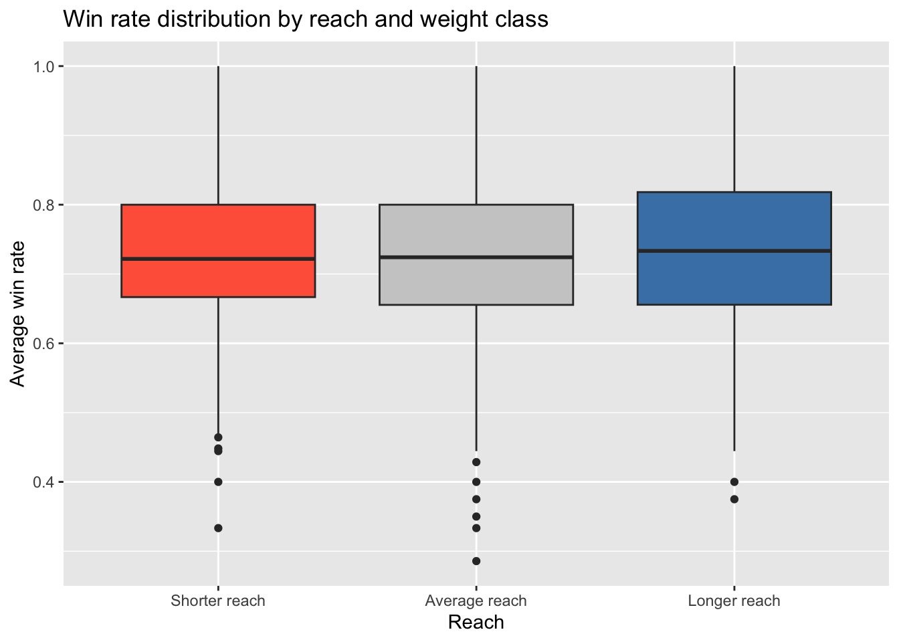
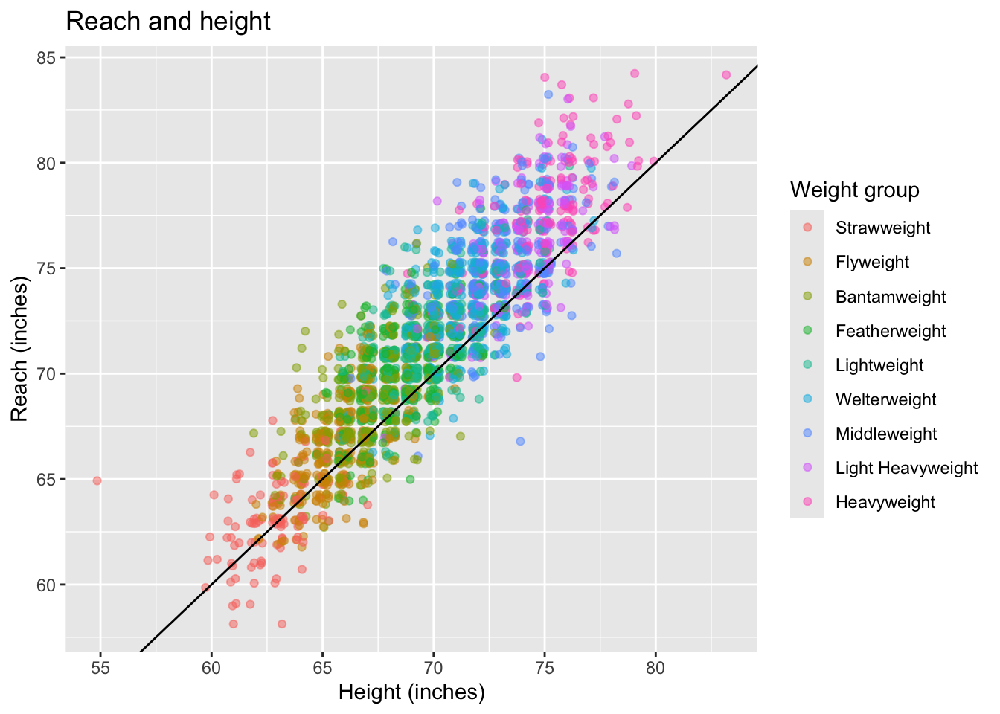
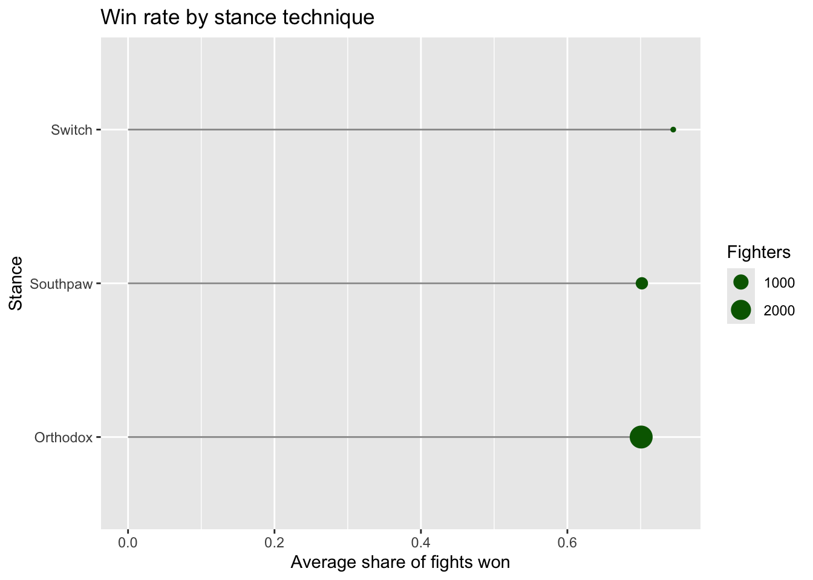

# A tibble: 6 × 3
first_name last_name ht_inches
<chr> <chr> <dbl>
1 Paulo Cesar Silva 89
2 Hong Man Choi 86
3 Nathan Jones 83
4 Cory Peterson 83
5 Stefan Struve 83
6 Gan McGee 82
# A tibble: 256 × 3
first_name last_name n
<chr> <chr> <int>
1 Abdul-Kareem Al-Selwady 2
2 Abe Alsaghir 2
3 Abu Azaitar 2
4 Adam Antolin 2
5 Adlan Amagov 2
6 Ahejiang Ailinuer 2
7 Akbar Abdullaev 2
8 Akbarh Arreola 2
9 Aleksandra Albu 2
10 Alen Amedovski 2
# ℹ 246 more rows
What we have found from our data:
Lots of reach values are missing (1,942 out of 4,628). Some stance, height and weight are missing too. We left them as NA.
19 fighters have 0 fights, so they have no win rate.So, and we removed them.
Rose Conceicao is listed at 4’7” with a 65 inch reach. This is probably a mistake on UFCStats, because it is very short, and the main UFC website says different. We kept it because that is what the site lists.
One fighter is 770 lbs. We kept it because that’s what the site says.
9 names show up twice (like Bruno Silva and Mike Davis). Their records are different, so they’re different people. We kept them.
# Keep fighters with at least 1 fight, and remove exact repeated rowsufc_final <- fighterdataclean |>filter(num_fights >0) |>distinct()
write_csv(ufc_final, "ufc_fighters_clean.csv")
Terms in each cols and their meanings:
The clean file has one row for each fighter. ‘first_name’, `last_name’, and ‘nicknam’ are the fighter’s names.
‘wins’, ‘losses’, and ‘draws’ are the number of fights won, lost, and tied.
‘stance’ is how the fighter stands, like Orthodox or Southpaw.
‘ht_inches’, ‘reach_inches’, and ‘weight_lbs’ are height and reach in inches and weight in pounds.
Plots
We only use fighters with at least 5 fights, because a win rate from 1 or 2 fights (like 0% or 100%) doesn’t tell us much.
ufc_5 <- ufc_final |>filter(num_fights >=5)# Weight groups in order from lightest to heaviestweight_order <-c("Strawweight", "Flyweight", "Bantamweight", "Featherweight","Lightweight", "Welterweight", "Middleweight","Light Heavyweight", "Heavyweight")ufc_5 <- ufc_5 |>mutate(weight_group =factor(weight_group, levels = weight_order))
Plot 1: Win rate by reach
ufc_5 |># Filtering fighters with missing reach or weight class datafilter(!is.na(reach_inches), !is.na(weight_group)) |>#Group by weight classsgroup_by(weight_group) |>mutate(reach_vs_group = reach_inches -mean(reach_inches)) |># inches above or below the group averageungroup() |>mutate(reach_group =case_when( reach_vs_group <-2~"Shorter reach", reach_vs_group <=2~"Average reach",TRUE~"Longer reach" )) |>#ordering from shortest to longest on the x-axismutate(reach_group =factor(reach_group,levels =c("Shorter reach", "Average reach", "Longer reach"))) |>ggplot(aes(x = reach_group, y = win_pct, fill = reach_group)) +geom_boxplot() +scale_fill_manual(values =c("tomato", "gray80", "steelblue")) +theme(legend.position ="none") +labs(title ="Win rate distribution by reach and weight class",x ="Reach",y ="Average win rate" )

Plot 2: Reach and Height
ufc_5 |>#filtering fighters with missing height, reach or weight classfilter(!is.na(reach_inches), !is.na(ht_inches), !is.na(weight_group)) |>ggplot(aes(x = ht_inches, y = reach_inches, color = weight_group)) +geom_jitter(alpha =0.5, width =0.3, height =0.3) +#To avoid, we added slightly jittered points so overlapping whole-inch measurements spread outgeom_abline(slope =1, intercept =0, color ="black") +labs(title ="Reach and height",x ="Height (inches)",y ="Reach (inches)",color ="Weight group" )

Plot 3: Win rate by stance
ufc_5 |>filter(!is.na(stance)) |>#average win rategroup_by(stance) |>summarize(avg_win_pct =mean(win_pct), n_fighters =n()) |>#keeping at least 10 fightersfilter(n_fighters >=10) |>mutate(stance =reorder(stance, avg_win_pct)) |>ggplot(aes(x = stance, y = avg_win_pct)) +geom_segment(aes(xend = stance, y =0, yend = avg_win_pct), color ="gray60") +geom_point(aes(size = n_fighters), color ="darkgreen") +coord_flip() +labs(title ="Win rate by stance technique",x ="Stance",y ="Average share of fights won",size ="Fighters" )

From Plots:
Plot1: The three boxes look almost the same. A longer reach does not seem to give a higher win rate.
Plot2: Taller fighters have a longer reach. Most dots are close to the black line, so reach is about the same as height. The far left dot is Rose Conceicao.
Plot 3: Orthodox and Southpaw technique fights win about the same (about 70%). Switch is a little higher (about 75%), but it has fewer fighters.
Finally, we can’t say that reach causes winning. Fighters who lose a lot often leave the UFC, so the fighters we see are not a typical group.